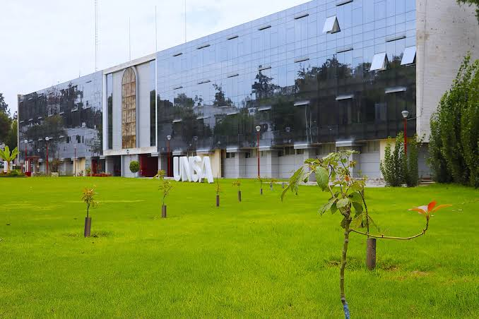
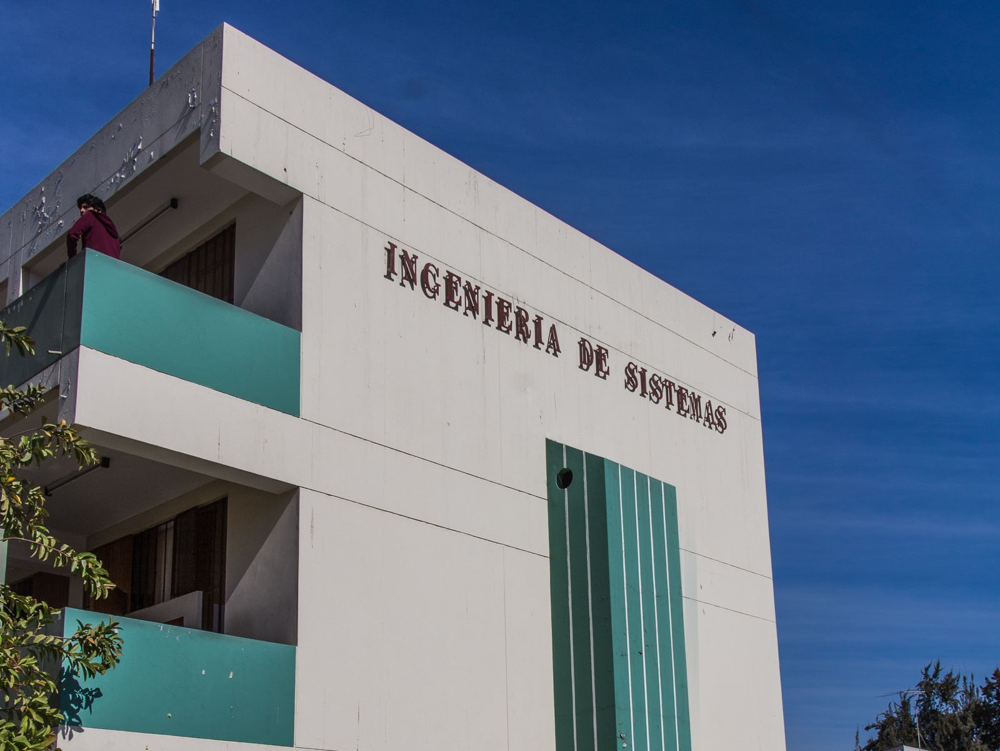
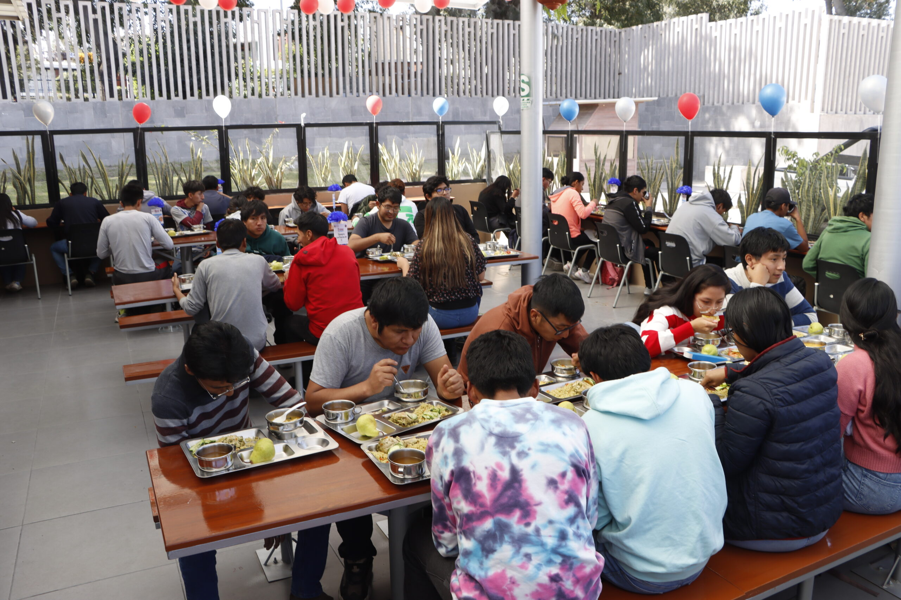
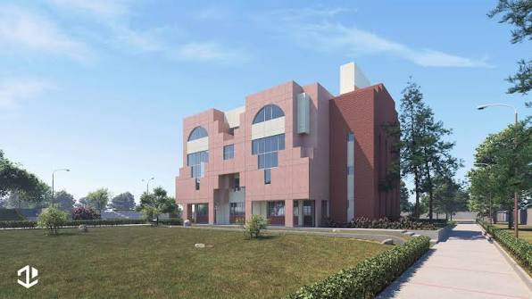
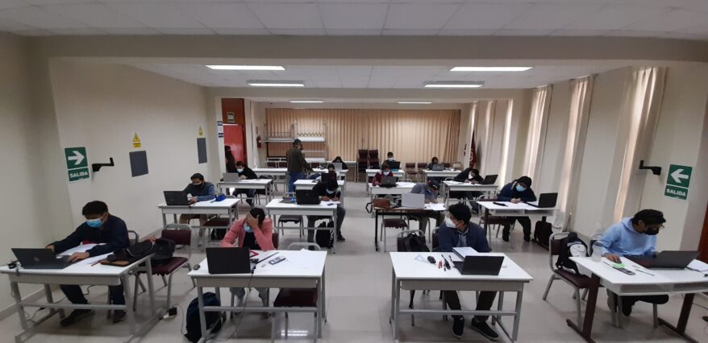
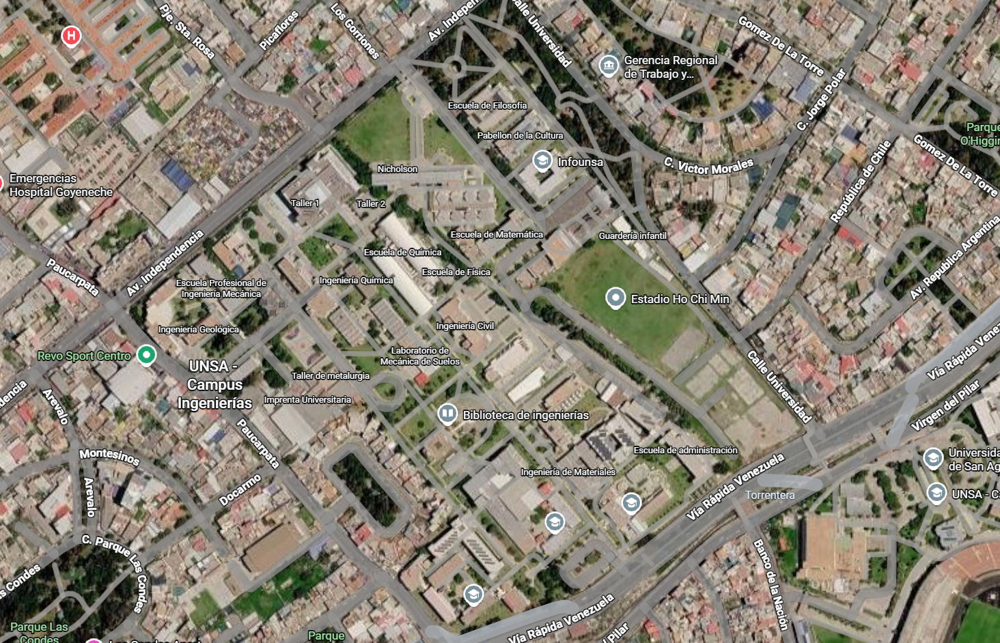

👋 ¡Bienvenid@ a la Familia Agustina!
Ingresar a la Universidad Nacional de San Agustín es un gran logro. Adaptarse a los pabellones, horarios y laboratorios toma tiempo, pero no estás solo en este camino.

💻 Tu Pabellón: Ingeniería de Sistemas
Aquí pasarás la mayor parte de tu tiempo entre laboratorios de programación, clases teóricas y proyectos grupales.

📌 Lugares Clave que Debes Ubicar en tu Primera Semana

- Comedor Universitario: Infórmate sobre los turnos de atención y requisitos de inscripción presencial u online.
- Oficina de Tutoría: ¿Dudas académicas o personales? Solicita apoyo sin costo en la coordinación de tutoría de tu escuela.

- Biblioteca Central y Especializada: Espacios tranquilos para avanzar tus laboratorios y acceder a bases de datos científicas.
🗺️ Ubicación de Aulas y Laboratorios
Para no perderte antes de tus primeras clases de laboratorio, revisa el mapa de distribución de pabellones.


💡 Mitos vs. Realidades en el Primer Ciclo
Mito: "Si repruebas tu primer examen parcial de laboratorio, tu semestre está perdido."
Realidad: El primer parcial es solo una evaluación diagnóstica de adaptación. Con tutoría y repaso constante puedes recuperar nota.
Mito: "Debes estudiar todo de forma individual y no pedir ayuda a tus compañeros."
Realidad: Formar grupos de estudio desde el primer día incrementa tus probabilidades de aprendizaje y pertenencia en la UNSA.
¿Tienes dudas sobre los servicios o tu horario?
Consulta siempre las plataformas y comunicados oficiales de la Universidad Nacional de San Agustín.